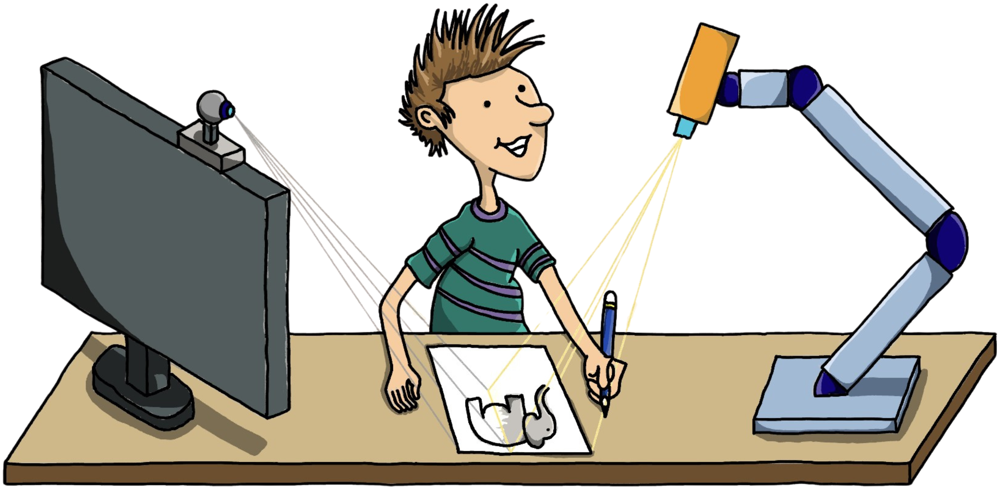
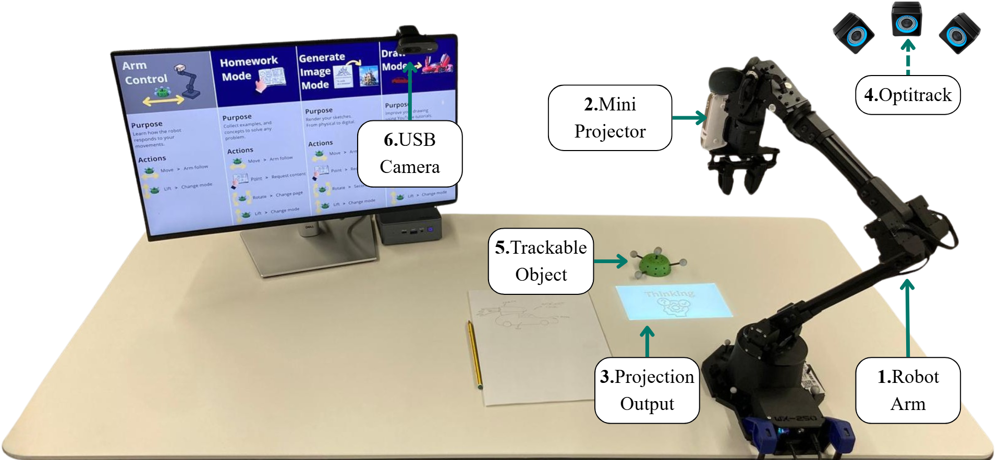
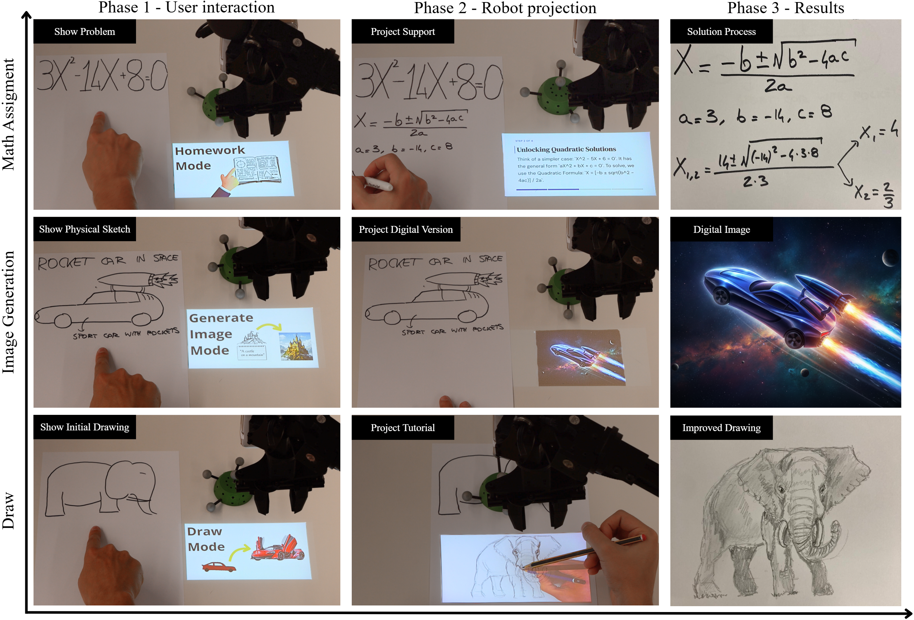
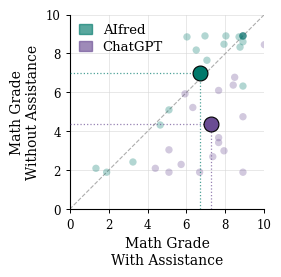
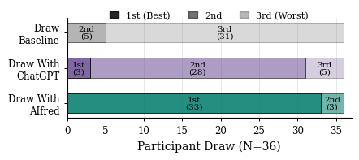
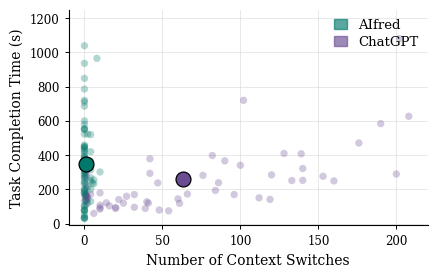
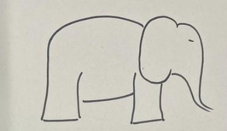
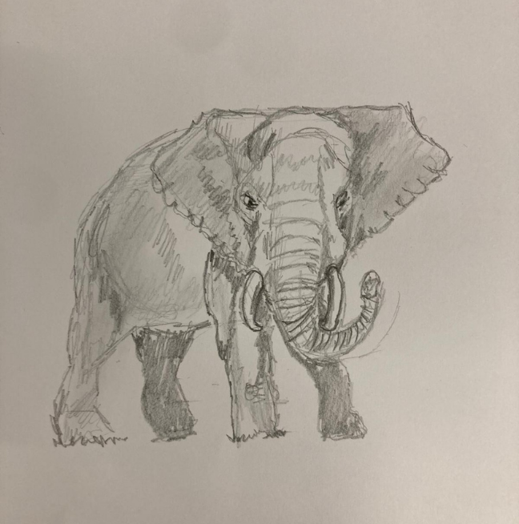
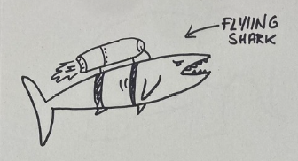

Workspace perception
An overhead camera captures the desk; a pointing gesture selects the region where assistance is needed.
Submitted to the IEEE International Conference on Robotics and Automation (ICRA 2027)
Desk-based learning and creative activities benefit from handwritten engagement, yet generative AI tools deliver guidance on a separate screen, creating a gap between where users think and where assistance appears. We present AIfred, a desk-based robotic arm with an end-effector-mounted projector that places AI-generated guidance alongside handwritten work. AIfred combines workspace perception, context-aware content generation, and robot-mediated projection to support math assignments, image generation, and drawing. In a user study (n = 36) comparing AIfred with ChatGPT (GPT-5.6 Luna) on a laptop, both systems performed comparably while assistance was available in the math assignment (6.7 vs. 7.3/10, p = .41), but AIfred yielded 60% higher short-term learning transfer once assistance was withdrawn (7.0 vs. 4.4/10, p = .003). Independent art and design professors ranked drawings produced with AIfred best in 33 of 36 cases. These findings indicate that spatially co-located AI assistance benefits tasks whose guidance shares a spatial frame with the work.

Many learning and creative activities unfold on paper at a physical desk, where handwriting encourages reformulation rather than passive transcription. Current AI tools, however, live on a screen: users must switch context between the paper they work on and the display where guidance appears.
AIfred closes this gap. It perceives the user's physical task, generates context-dependent support, and projects it back onto the desk, beside the work.
AIfred is built from off-the-shelf components arranged around an ordinary desk. The projector rides on the robot, so the guidance can move to wherever the user is working.

AIfred's spatial assistance pipeline turns a physical task into co-located guidance in three stages.
An overhead camera captures the desk; a pointing gesture selects the region where assistance is needed.
A multimodal model interprets the selected region under the active interaction mode and generates task-relevant guidance.
The robotic arm projects the guidance onto the desk at the location indicated by a tracked object.
MediaPipe continuously tracks the user's hand. When the user points at part of the page, AIfred captures that region and sends it, together with the active interaction mode, to Google's Gemini models: gemini-3.8-flash for scene understanding and reasoning, and gemini-2.5-flash-image for image generation.
The prompts are structured to favour scaffolding, such as hints, formulas, and analogous examples, over direct answers, so the user still does the thinking. The result is sent to the robot, which moves the projector toward the trackable object and displays the content on the desk. The whole loop runs without a screen, keyboard, or mouse: the user points, reads, and keeps working on paper.
Solving exercises, sketching ideas, and learning to draw are still done by hand on paper. AIfred supports each of them with a dedicated mode, and every interaction follows the same three phases: the user shows the work, the robot projects support, and the user completes the task.

What you do: write the problem on paper, for example a quadratic equation, and point at it.
How AIfred helps: it projects step-by-step support beside the exercise, such as the relevant formula and a simpler worked example, without giving away the answer. You solve the problem yourself, by hand.
What you do: sketch an idea on paper and add a few words describing it, like "rocket car in space".
How AIfred helps: it turns the sketch into a finished digital image and projects it next to your drawing, taking your idea from paper to a polished visual.
What you do: make a first attempt at a drawing and point at it.
How AIfred helps: it projects a drawing tutorial for your subject onto the desk, so you can follow the guide stroke by stroke and produce an improved drawing on your own paper.
The trackable object doubles as a controller: move it and the arm follows, rotate it to change page, and lift it to switch mode.
We ran a mixed-design user study with 36 participants from across the university. Half used AIfred and half used ChatGPT (GPT-5.6 Luna) on a laptop. Everyone solved a quadratic equation, turned a sketch into a digital image, and drew a figure three times: without help, with their assigned system, and with the other system. About 35 minutes later, they solved a second equation with no assistance at all, to measure what they had actually learned.
With assistance withdrawn, math scores were 7.0/10 after AIfred vs. 4.4/10 after ChatGPT (p = .003).
Three independent art and design professors ranked AIfred-assisted drawings first in 92% of cases (Kendall's W = .86).
On average, 1 physical-digital switch with AIfred vs. 63 with ChatGPT, with no loss in perceived productivity (p = .61).

Each participant solved a quadratic equation, picked from a pool of five of comparable difficulty, with help from their assigned system. About 35 minutes later, after the image and drawing tasks, they solved a second equation with no help at all. Solutions were graded blind by four independent AI grading agents (Gemini Flash 3.6) using the same eight-step rubric, from problem setup and method choice through the discriminant, both roots, simplification, and verification. The agents agreed closely, differing by only 0.53 points on average.
In the chart, each small dot is one participant: their grade with assistance on the horizontal axis, and without it on the vertical. Dots on the diagonal kept the same grade; dots below it lost ground once the help was gone. The large markers show each group's average.
While assistance was available, the two groups scored about the same (6.7/10 with AIfred vs. 7.3/10 with ChatGPT, p = .41). The difference appeared once the help was taken away. The ChatGPT group fell to 4.4/10, a 40% drop, while the AIfred group held steady at 7.0/10, even rising by 4.5%. AIfred users scored 2.6 points higher, a 60% higher short-term learning transfer (p = .003).
We think the reason is how the guidance is used. An answer on a screen can be copied onto paper with little thought. AIfred projects hints, formulas, and analogous examples instead of solutions, so users have to reinterpret them and write out every step themselves. That extra effort is what stays with them when the help is gone.

Each participant drew three times: without help, with ChatGPT, and with AIfred. Three independent art and design professors ranked every set, and largely agreed (Kendall's W = .86). Drawings made with AIfred were ranked first in 33 of 36 cases and never last. ChatGPT drawings were mostly second (28 of 36), and unassisted drawings were last in 31. AIfred drawings improved both overall form and finer details such as proportions and line quality. Drawing is where co-location matters most: the reference sits directly on the paper, so there is nothing to re-align after looking away.

We counted every time a participant's attention moved between the desk and the screen. ChatGPT users switched 63 times per task on average; AIfred users switched once, a 98% reduction. Yet when asked, both groups rated context switching as barely disruptive (1.3/5 with AIfred vs. 1.7/5 with ChatGPT). People are so used to jumping between paper and screen that they no longer notice the cost, even though it coincided with lower learning transfer and weaker drawings. AIfred tasks took longer (350 s vs. 260 s), but that time went into working on paper, not into looking away from it.
Two examples from the study. Drag each divider to compare what the participant put on the desk with the result obtained with AIfred.
A first unassisted attempt at an elephant, then the same drawing after following AIfred's projected tutorial.

INPUT
AIFREDA pencil sketch of a "rocket car in space", then the digital image AIfred generated from it and projected back onto the desk.

INPUTWhat participants reported matches what they did. AIfred users rated perceived learning support far higher (4.5/5 vs. 3.4/5, p < .001), and they were the ones who kept their math skills once help was withdrawn. They also found it more innovative (4.5 vs. 3.5) and more satisfying (4.2 vs. 3.5).
AIfred asked more of them: cognitive demand was higher (3.4 vs. 2.9, p = .03) and tasks took longer. Screen-based answers are easy to copy with little thought, while projected guidance has to be reinterpreted and reproduced by hand. That extra effort did not feel like a cost, since perceived productivity was the same in both groups (4.1 vs. 4.0, p = .61).
The biggest gap between feeling and behaviour is context switching. ChatGPT users looked away from their paper 63 times per task, yet rated the disruption as low as AIfred users did. Attention fragmentation works below awareness: people do not notice it, but it still shows up in their learning and drawings.
Takeaway: AIfred makes people work better, not just faster. With guidance on the desk, users stay on the paper, think harder, and keep more of what they practise. The benefit is largest when the guidance and the work share the same space, as in drawing. Robot-mediated projection is not a general replacement for the screen, but a targeted tool for hands-on learning and making.